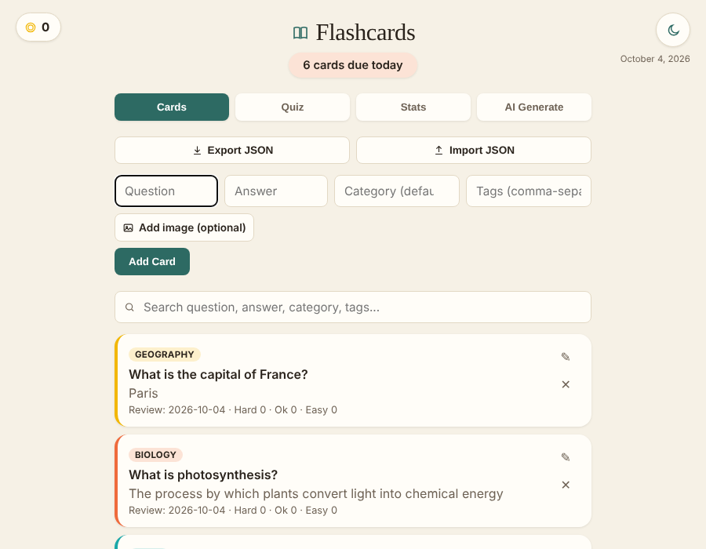

Flashcards
A single-file spaced-repetition flashcards app, built with plain HTML, CSS, and JavaScript - no frameworks, no build step, no backend.

What
A spaced-repetition flashcard app with a simplified SM-2–style scheduler, categories and search, optional images per card, two quiz modes, a coins-and-hints system, stats, and optional AI-assisted card generation (bring your own API key). Everything stays in the browser's local storage - no server, no account.
My role
Product idea, UX, and the scheduling/data-model design; built in pair-programming with an AI assistant (Claude).
Quality
Color system verified against WCAG AA contrast by calculation, not by eye, in both light and dark mode.
Status
Live · stable, single HTML file · MIT · source on GitHub.
Why this exists
Most flashcard apps either lock data behind an account or are over-engineered for what's fundamentally a simple problem: show a question, hide the answer, let the learner grade their own recall, and use that grade to decide when to show the card again. This was an exercise in building that loop well - a real spaced-repetition scheduler, a thoughtful visual design, and a few small ideas (hint-buying with earned coins, AI-assisted card generation) layered on top without compromising the core mechanic.
Highlights
- Deterministic category colors. Each category's color is derived from a hash of its name at render time - never stored - so the data model never needs a "color" field and two devices always render categories identically.
- The answer isn't in the DOM until you ask for it. Clicking "Show Answer" is what writes the answer into the page, rather than just unhiding it with CSS - a deliberate choice so the quiz can't be "cheated" by inspecting the page early.
- An anti-farming rule in free-practice mode. "All cards" mode intentionally doesn't touch the spaced-repetition schedule, and a card only earns coins once per calendar day there - otherwise the same card could be regraded in a loop for infinite coins.
- AI card generation stays optional and reviewed. Paste text or drop a file, and Claude drafts question/answer pairs - but nothing is added to the deck until each card is reviewed and confirmed.
- Client-side image compression. Images attached to cards are resized and compressed before saving, so a handful of photos don't blow through the browser's local storage quota.
How it was built
HTML5, CSS3, and vanilla JavaScript (ES6+) - no framework, no bundler. Building the scheduling algorithm, the data model, and the UI state management by hand was the point of the exercise, not a constraint I hit by accident. LocalStorage is the only persistence layer; the optional AI generation feature calls the Anthropic API directly from the browser, with the user's own key.